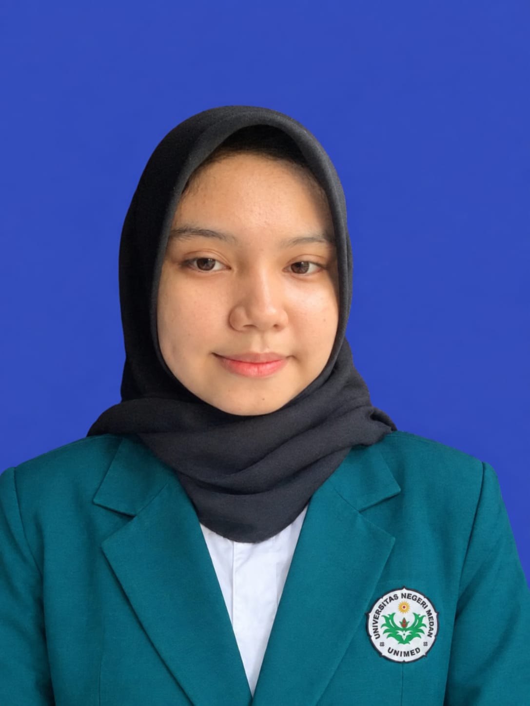

🎨
Kreativitas
Mengembangkan ide kegiatan dan media pembelajaran yang menarik dan edukatif bagi anak usia dini.
My Journey, My Growth, My Story

Mahasiswa Pendidikan Guru PAUD
Universitas Negeri Medan
Ruang untuk menampilkan perjalanan akademik, kreativitas, prestasi, dan cita-cita saya dalam mendukung pembelajaran anak usia dini.
Mengenal profil, minat, dan tujuan saya.
Nama saya Juana Putri Damanik. Saya merupakan mahasiswa Program Studi Pendidikan Guru Pendidikan Anak Usia Dini (PG PAUD) di Universitas Negeri Medan.
Saya tertarik mempelajari perkembangan anak, kegiatan bermain sambil belajar, serta pembuatan media pembelajaran yang menarik dan edukatif. Melalui perkuliahan, saya ingin terus mengembangkan kreativitas, komunikasi, dan kemampuan menjadi calon pendidik yang bertanggung jawab.
Perjalanan pendidikan dan bidang yang dipelajari.
Program Studi: Pendidikan Guru Pendidikan Anak Usia Dini (PG PAUD)
Universitas: Universitas Negeri Medan
Tahun Masuk: 2024
Perkembangan anak, perencanaan kegiatan pembelajaran, media edukatif, seni dan kreativitas, serta pengelolaan kegiatan belajar anak usia dini.
Pengalaman magang dan prestasi selama perjalanan akademik saya sebagai mahasiswa PG PAUD.
Tahun: 2025
Mengikuti kegiatan magang di TK Khalilah Islamic Daycare, KB & TK sebagai pengalaman belajar langsung di lingkungan pendidikan anak usia dini.
Kegiatan ini menjadi kesempatan untuk mengenal lingkungan sekolah, mengamati kegiatan pembelajaran, serta memahami peran guru dalam mendampingi dan mendukung perkembangan anak.
Pengalaman Magang · 2025Meraih Juara I Lomba Alat Permainan Edukatif (APE)
Prestasi ini diraih dalam kegiatan 4th National Competition of Art Science and Technology dengan tema “Kecil Berkreasi, Besar Berprestasi”.
Kegiatan ini diselenggarakan oleh Program Studi PG-PAUD, Fakultas Ilmu Pendidikan, Universitas Negeri Medan.
Juara I · Lomba APEKemampuan dan tujuan yang ingin terus dikembangkan.
Mengembangkan ide kegiatan dan media pembelajaran yang menarik dan edukatif bagi anak usia dini.
Melatih komunikasi yang ramah, jelas, dan sesuai dengan tahap perkembangan anak.
Menjadi pendidik yang kreatif, sabar, reflektif, dan bertanggung jawab dalam mendukung tumbuh kembang anak.
Terima kasih telah mengunjungi portofolio saya. Silakan hubungi saya melalui email atau Instagram untuk keperluan akademik atau kolaborasi.
Contact Me Instagram